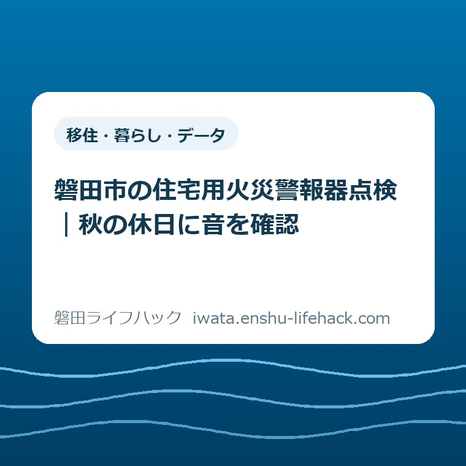

移住・暮らし・データ
磐田市の住宅用火災警報器点検｜秋の休日に音を確認

この記事の要点
Q. 家に付いている火災警報器、どう点検すればいい？
A. 機種や設備で条件が異なります。自宅の説明書に従い、ボタンかひもで正常な反応を確認します。安全に届かない場合は無理をせず相談を。反応がなければ型番や説明書で対処を確かめてください。
家の手間を増やす前に、いま付いている一台を確かめる
住宅用火災警報器の点検方法は、機種によって異なります。設置が必要な場所も、寝室の位置や既存の設備で変わります。まず自宅の取扱説明書と磐田市の案内を確かめてください。この記事は、すでに取り付けた警報器の作動を、秋の休日に確認するための段取りを整理したものです。
仕事と家事を回しながら、家の設備まで気に掛けるのは手間がかかります。電球、換気扇、給湯器、庭の片付け。その一つひとつを誰かが引き受けています。天井に付いていて普段触らない警報器まで、毎日意識できなくても不思議ではありません。点検していなかったことを責める話にはしたくありません。
大石浩之（磐田市／不動産業）として、私は「家を全部点検する日」を設けるより、まず一つの設備の状態を家族が知るほうが進めやすいと考えます。今回の一歩は、住宅用火災警報器の作動確認です。買い替える機種の比較や、家全体の防災計画まで、一度に決める必要はありません。
作動確認は、普段と違う音がしたときの対応とは分けてください。煙や焦げ臭さなど、火災が疑われるときは点検の続きではありません。安全な場所への避難と119番通報が先です。通報で伝える内容は、既存の磐田市の消防・救急ガイドで整理しています。
11月9日からの秋季全国火災予防運動を、家の確認のきっかけに
神奈川県の「令和8年秋季全国火災予防運動」は、2026年11月9日から15日までの日程を案内しています。これは全国の運動の日程です。磐田市独自の催しや、訪問点検の予約日を示すものではありません。10月25日の時点では、秋の運動に先立って自宅の状態を確認できる時期です。
同県の案内は、住宅用火災警報器を定期的に点検し、10年を目安に交換するよう呼び掛けています。また、消防庁が春と秋の火災予防運動に合わせ、最低限年2回の点検を推奨していることも説明しています。季節の変わり目を覚えておくと、点検を思い出すきっかけになります。
ここでの「10年」は、10年間は何も確かめなくてよいという意味ではありません。磐田市の住宅用火災警報器の案内は、機種によって電池寿命の表記が違い、設置環境によって劣化が早い場合もあると説明しています。経過年数だけで、いま作動するかどうかは判断できません。
意外に見落としやすいのは、電池だけでなく本体も劣化する点です。磐田市は電池寿命とともに機器本体も劣化するため、併せて交換することを勧めています。「音が出なくなったら電池を買う」とだけ覚えると、本体の状態を見落とします。交換を考えるときは、設置時期と機種を一緒に確認する必要があります。
点検は、説明書を見てからボタンかひもで確かめる
磐田市が案内する作動点検は、ボタンを押す、またはひもを引く方法です。ただし、ボタンの位置や操作時間、正常時の音声は、すべての製品で共通とは限りません。記事の図を製品の説明書の代わりにはせず、自宅の機器に対応した操作を確かめてから進めます。
最初に見るのは、手元の取扱説明書や購入時の書類です。型番が分かるなら、メーカーの公式情報も確認できます。似た外観の製品の説明を、そのまま自宅の機器に当てはめないでください。書類が見つからない場合は、見える範囲で製品名や型番を確認し、不明なまま分解しないようにします。
次に、無理のない姿勢で操作できるかを確かめます。高い天井の警報器へ手を伸ばすために、不安定な椅子へ上がることは勧めません。ひもがある機種でも、強く引けばよいという話ではありません。安全に届かなければ、その日の作業は止め、家族や管理会社などへ相談する段取りに切り替えてください。
点検音を出す前には、同居する家族へ「これから警報器の点検をする」と一声掛けると混乱を減らせます。寝ている人や、急な音に驚きやすい人がいれば、実施する時間を相談します。これは市が定めた点検要件ではなく、家の中で無理なく作業を進めるための私からの提案です。
操作したあとは、取扱説明書に書かれた正常な反応があるかを確かめます。音が出たかどうかに加え、どのような音声や表示だったかも見ます。「何か鳴ったから終わり」とせず、説明書と照らすところまでを一組にしてください。機器が伝えている内容を、聞いた人の記憶だけで決めつけないためです。

一台を確かめたからといって、別の部屋の警報器まで確認済みになるわけではありません。複数台ある場合は、寝室や廊下など場所を区別して記録します。同じ日に全部できなければ、未確認の場所を残して構いません。確認した場所と、これから確認する場所を混ぜないことが、家族への引継ぎに役立ちます。
鳴らないときは、その場で原因を一つに決めない
操作しても反応がない場合、この記事だけで電池切れか故障かを判定することはできません。まず操作が自宅の機種の説明と合っているかを確認します。表示や音声がある場合は、その内容も手掛かりにします。原因を確かめないまま「まだ大丈夫」と扱うことも、一律に「電池だけ替えればよい」と決めることも避けます。
説明書の対処方法が分からなければ、メーカーへ型番と状態を伝えて確認します。「警報器が壊れた」だけより、「寝室の一台で、この操作をしたが反応がない」と伝えるほうが、何を確かめたかが伝わります。設置時期が分かれば併せて伝えます。不明なら不明のままにし、購入年を記憶だけで埋めないでください。
賃貸住宅では、警報器が入居時からの設備か、自分で取り付けたものかも確認材料です。交換費用や作業の担当を、借主・貸主のどちらかに一律で決める記事にはできません。契約や設備の扱いを確認するため、まず管理会社や貸主へ状態を伝えます。取り外してから相談するより、現状を共有してから進めるほうが行き違いを減らせます。
自分で交換する場合も、使える電池や本体の取扱いは製品の説明に従います。この記事では、配線を触る作業や分解の方法は扱いません。分からない点を残したまま手を加えるより、製品の窓口へ確認するほうが確実です。反応がない機器は、相談中だから正常になったわけではないことも、家族で共有してください。
磐田市は、消防職員を名乗る電話や訪問販売にも注意を促しています。市の消防・消防団を名乗るあやしい電話・訪問販売への注意には、消防本部が特定の業者に販売や点検を依頼することはないと明記されています。点検しようと思った時期に訪問があっても、それだけで市の依頼とは判断できません。
訪問した相手の説明に不安がある場合は、その場で購入を決めず、市の消防本部へ確認してください。公式の注意ページにある問い合わせ先は、消防本部予防課の0538-59-1718です。これは緊急通報用の番号ではありません。訪問販売の確認と、実際に火災が起きているときの119番通報を混同しないようにします。

記録は細かい報告書より、次の人が分かる一行に
点検の記録は、家の管理をしている人の負担にならない形にしたいものです。私なら「場所・確認日・反応・残った確認」の四つを、一行で残します。専用のアプリを導入する必要はありません。家族が普段見る手帳や共有メモなど、次に探しやすい場所を選びます。
例えば「一階寝室、10月25日、説明書どおりの音声を確認、設置年は未確認」という書き方です。これは記録方法の例であり、実際の相談事例ではありません。全部の項目が分からなくても、確認できたことと不明なことが分かれていれば、次の人が同じ調べ物を繰り返さずに済みます。
作動音を家族の一人だけが聞いた場合は、全員が音を知っているとは限りません。だからといって、家族全員を集めて何度も鳴らすことまで今日の課題にする必要はありません。まず点検した事実と、異常があれば誰へ連絡するかを共有します。家族の予定が合うときに、説明書も一緒に見る段取りでよいと私は考えます。
離れて暮らす親の家が気になる場合も、電話越しに高い所へ上がるよう頼まないでください。自分が見えていない場所で、親が無理をしてしまう可能性があります。「いま触ってみて」ではなく、次に訪ねる人へ確認を頼む方法もあります。点検する人と、記録を受け取る人を分ければ、一人に全部の手間を集めずに済みます。
家族の連絡や備えを整理したい場合は、磐田市の防災訓練で家族が確かめる項目も参考になります。ただし、同記事で紹介した9月6日の訓練は終了しています。ここでは開催案内としてではなく、家族の役割や安否確認を考えるための関連記事として紹介します。
良い点と、注文したい点を家の段取りから考える
市の案内の良い点は、設置済みの家庭にも定期的な点検を呼び掛けていることです。新しく取り付ける人だけへの説明なら、すでに天井にある警報器はそのままになりがちです。電池の状態と本体の劣化を併せて説明しているため、購入後の管理まで視野に入れられます。
もう一つの良い点は、操作を「ボタンを押す、またはひもを引く」と具体的に示していることです。防火意識を高めるという言葉だけでは、休日の家で何をすればよいかが残ります。触る場所と確かめる対象が示されると、取扱説明書を出してみようという行動につながります。
一方で、私が注文したい点は、案内を読んだあとのつまずきも一緒に見える形にしてほしいことです。高くて届かない、説明書がない、賃貸で勝手に交換してよいか分からない。こうした事情があると、必要性を理解していても手が止まります。住む人の意識だけでは解決しない段取りがあります。
私は、点検案内に「自分でできない場合に誰へ何を伝えるか」が添えられると助かると考えます。これは新しい支援がすでにあるという紹介ではなく、一事業者としての要望です。機器の操作はメーカー、借家の設備は管理会社、設置基準や不審な勧誘は市の担当先と、質問の種類で確認先を分けるだけでも調べ直しを減らせます。
対案・結論——今日は「作動を確かめた場所」を一つ残す
今日の一歩は、安全に操作できる一台の作動を、説明書に従って確認することです。反応が確認できたら、その場所と日付を残します。できなければ、何が妨げになったかを残します。家全体を完了扱いにするのではなく、実際に分かった範囲を一つ増やすところまでで区切ります。
休日の短い時間で取り組むなら、最初から交換品を探し始めるより、説明書を手元に置いて機器を確かめる順番を勧めます。鳴らない理由も設置時期も分からないうちに買い物へ進むと、確認し直す項目が増えます。購入が必要かどうかは、点検の結果と製品の案内を基に判断してください。
地震による電気火災への備えが気になる方には、磐田市の感震ブレーカーを比べる記事もあります。感震ブレーカーと住宅用火災警報器は役割が異なります。一方を付けたことで他方の点検が不要になる、と読み替えないでください。今回は警報器の作動確認に焦点を絞ります。
大石の視点——設置したことと、今日作動することは別の確認
私は、家の管理では「ある」と「使える」を分けて考えたいと思っています。住宅用火災警報器も、設置した事実だけでは今日の状態まで分かりません。設置したことと、今日作動することは別の確認です。見える所に付いているから安心と決めず、製品が案内する方法で反応を確かめる。その地味な作業に意味があります。
ただ、どこまで家族に点検を頼むのが無理のない範囲なのか、私は迷います。遠方の家族が心配して声を掛けた結果、高い所の作業まで親一人が抱えてしまっては困ります。だから私は、できない理由を残すことも前進だと考えます。家の管理は、気付いた人だけの仕事にしないほうが続けられます。
これは現場で起きた特定の相談を再現した話ではなく、段取りを重く見たいという私の意見です。作業する人の体力、住まいの設備、契約の内容は家庭ごとに違います。この記事の順番をそのまま当てはめるより、自宅で安全にできる範囲を見極めてください。
よくある質問
すでに付いている警報器も点検が必要ですか？
磐田市は、設置済みの家庭にも定期的な作動点検を案内しています。取り付けたことだけでは、現在の電池や本体の状態までは分かりません。機種に対応した説明書を読み、ボタンやひもで正常な反応を確かめてください。高い所へ無理に上がらず、安全に操作できない場合は家族などに相談します。
鳴らなければ電池を交換するだけでよいですか？
反応がない原因を、この記事だけで電池切れと断定することはできません。操作方法、型番、表示などを確認し、説明書やメーカーの案内に従います。市は電池とともに本体も劣化すると説明しています。設置時期も確認材料にし、分からないまま電池交換だけで解決したことにしないでください。
賃貸住宅の警報器は誰に確認すればよいですか？
まず管理会社や貸主へ、設置場所、機種、確認した操作、反応を伝える方法があります。費用や交換担当は、契約と設備の扱いで異なるため一律には決められません。操作方法は製品の説明書やメーカーへ、設置基準の疑問は市へ確認します。自分で取り外す前に、現在の状態を共有してください。
制度や設備の扱いは個別条件で異なり、製品の仕様や公式情報も更新されます。2026年10月25日に確認した情報を基に整理しました。最後は磐田市公式の住宅用火災警報器ページで最新の案内を確認してください。
参考にした公式情報
- 磐田市「住宅用火災警報器」（2026年10月25日確認）
- 磐田市「消防・消防団を名乗るあやしい電話・訪問販売にご注意ください」（2026年10月25日確認）
- 神奈川県「令和8年秋季全国火災予防運動」（2026年10月25日確認）
最終確認日：2026-10-25 ／ 本記事は公表情報と執筆者の見解を分けて記載しています。制度・数値・公開状況は変更される場合があるため、最新情報は磐田市公式ページでご確認ください。

大石浩之／磐田市／不動産業・宅地建物取引士